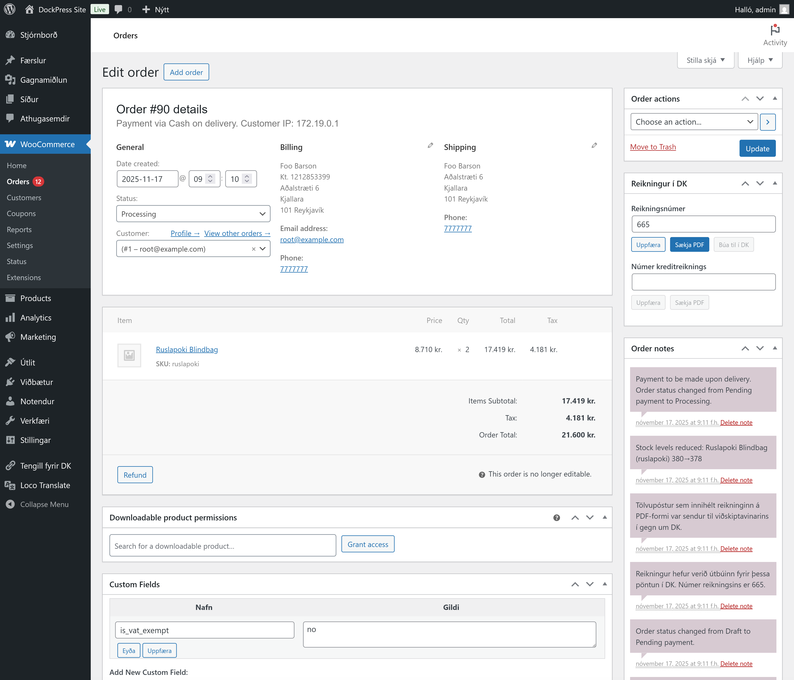
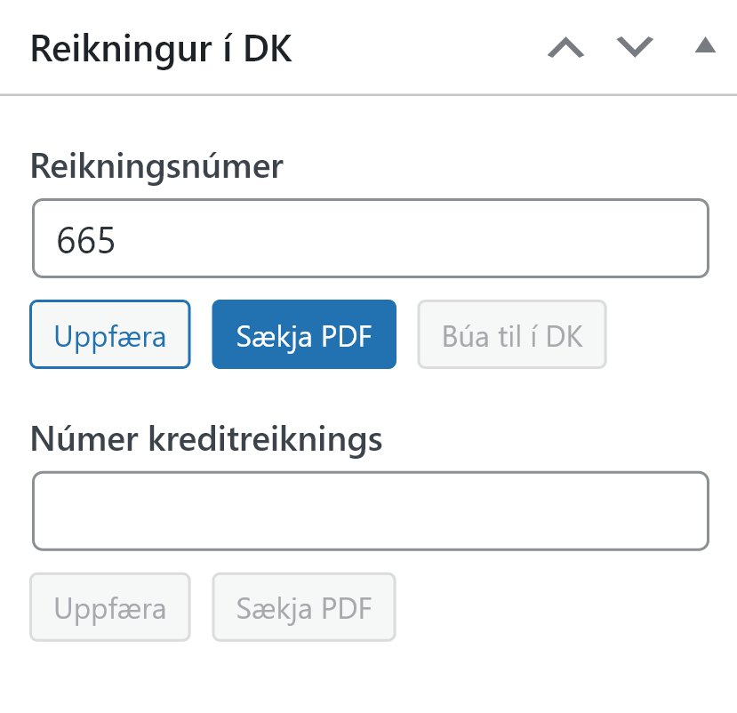
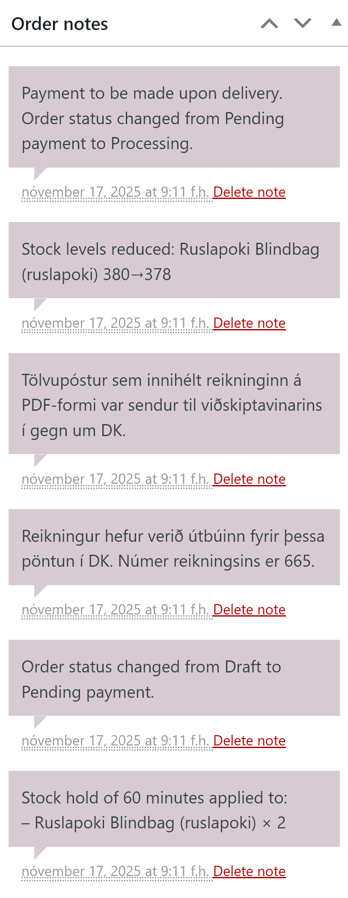

Pantanir og reikningar

Tengill fyrir DK bætir eftirfarandi inn í pantanaviðmótið:
- Kennitala er skráð á heimilisfang reiknings
- Í hliðarstiku er bæði hægt að skrá og skoða reikninga
- Atburðaskrá er birt undir Order Notes
Að útbúa reikninga

Ef reikningur er ekki búinn til sjálfkrafa er hægt að útbúa reikninga handvirkt með því smella á happ í liðarstikunni undir liðnum Reikningur í DK til að útbúa reikning handvirkt og þá skráist númer reikningsins á pöntunina sjálfkrafa. Ennfremur er hægt að handskrá reikningsnúmer ef reikningur hefur verið útfærður í DK eða dkPlus.
Númer kreditreiknings er einnig hægt að skrá við pöntun.
Reikningar sem sóttir eru á PDF-formi frá DK eru eingöngu geymdir í stutta stund í senn. Þetta er gert vegna öryggis- og persónuverndarsjónarmiða. Það er því ekki góð hugmynd að senda viðskiptavinum eða samstarfsfólki vefhlekk á PDF-útgáfuna nema hann sé opnaður strax.
Ferill pöntunar

Í hliðarstikunni undir Order Notes er ferill pöntunarinnar skráður; þ.m.t. númer reiknings, breytingar á lagerstöðu fyrir þær vörur sem eru pantaðar o.s.frv. Ef upp koma villur er mögulegt að greina þær hér.
Verð eru hilluverð
Þau verð sem birtast á reikningum eru þau sömu og eru birt viðskiptavinum í WooCommerce burt séð frá því verði sem skráð er í DK. Þetta er gert til að koma í veg fyrir ósamræmi milli upphæða sem eru notaðar af WooCommerce, greiðslumiðlun og á reikning, sem og til að passa upp á rétt neytenda.
Heimisföng og kennitölur
Þegar viðskiptavinur gefur ekki upp kennitölu eða notuð er sjálfgefin kennitala, þá er sjálfgefin kennitala skráð á reikninginn í DK og viðskiptavinurinn skráður á reikninginn sem vörumóttakandi.
Til að upplýsingar um viðskiptavininn komi fram á prentútgáfu reiknings gæti þurft að breyta sniðmáti reikninga í DK eða dkPlus.
Ef innskráður notandi sem er með skráða kennitölu eða viðskiptamannanúmer gengur frá pöntun, þá er kennitölureiturinn ekki birtur og kennitalan er sjálfkrafa færð inn.
Reikningar eru alltaf bókaðir
Athugið að reikningar sem eru útbúnir út frá pöntunum í WooCommerce eru skilgreindir sem prentaðir reikningar eða bókaðir reikningar í DK og dkPlus. Tengill fyrir DK getur því ekki skráð pantanir eða búið til drög að reikningum í DK, dkPlus eða DK One.